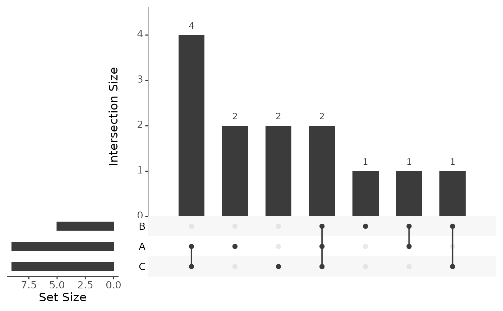

Build an upset plot from a named list of sets
Arguments
- list_input
A named list where each element is a vector of items in that set
- xlab
X axis label for the intersection bar plot
- ylab
Y axis label for the bar counts
- title
Plot title
- n_intersections
Number of intersections to show in the upset x-axis (passed to ggupset::scale_x_upset). Default: 20
- ymax_offset
Numeric offset added to the computed ymax to provide headroom above the tallest bar. Default: 0.5
- order_by
How to order intersections: "freq" or "degree". Default: "freq"
- backend
Which backend to use for plotting: 'UpSetR' or 'ggupset'
- text_scale
Numeric scaling factor for text size (only used if backend is 'UpSetR')
Examples
list_input <- list(
A = c(1, 2, 3, 5, 7, 8, 11, 12, 13),
B = c(1, 2, 4, 5, 10),
C = c(1, 5, 6, 7, 8, 9, 10, 12, 13)
)
plot_upset(list_input)
#> Warning: `aes_string()` was deprecated in ggplot2 3.0.0.
#> ℹ Please use tidy evaluation idioms with `aes()`.
#> ℹ See also `vignette("ggplot2-in-packages")` for more information.
#> ℹ The deprecated feature was likely used in the UpSetR package.
#> Please report the issue to the authors.
#> Warning: Using `size` aesthetic for lines was deprecated in ggplot2 3.4.0.
#> ℹ Please use `linewidth` instead.
#> ℹ The deprecated feature was likely used in the UpSetR package.
#> Please report the issue to the authors.
#> Warning: The `size` argument of `element_line()` is deprecated as of ggplot2 3.4.0.
#> ℹ Please use the `linewidth` argument instead.
#> ℹ The deprecated feature was likely used in the UpSetR package.
#> Please report the issue to the authors.
